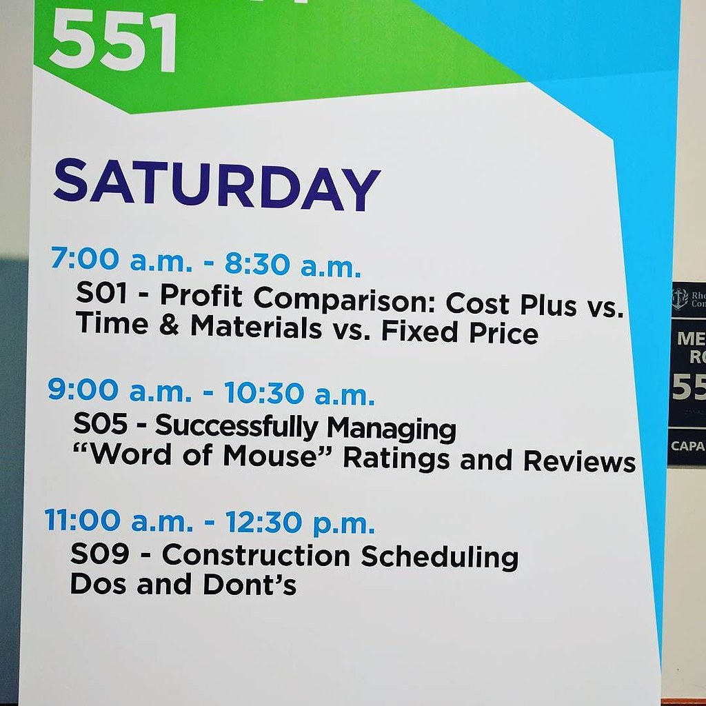

How SaaS Companies Use User Reviews to Win Search Traffic and Signups
Learn how SaaS firms turn user reviews into search traffic, why G2 and Capterra pages rank, and how review pages turn readers into trial signups.
SaaS firms win search traffic by gathering user reviews on G2 and Capterra, showing them on their own pages, and letting buyers find words from real users. Reviews match the searches buyers type when they compare tools. This guide shows how SaaS companies use user reviews for SEO and turn praise into signups.
Most SaaS teams hide reviews on one page and never ask happy users for words. They write their own praise while buyers trust strangers more than sellers. This habit hands signups to rivals whose reviews buyers can read.
You will learn where reviews rank, how to gather them, and how to turn readers into trial signups.
Why User Reviews Pull Search Traffic That Sales Pages Miss
Buyers search for reviews before they buy because they trust users more than sellers. A review page matches that search while a sales page praises the product in its own words. Google ranks the review page because it answers the exact search the buyer typed.
Reviews also keep pages fresh because new words arrive each week from real users. Google sees fresh words as a sign that buyers still use and love the tool. This guide shows how SaaS companies use user reviews for SEO so each new review lifts the page a little higher.
A small invoicing firm asked its users for reviews on Capterra after each smooth month of use. Buyers who searched for invoicing tool reviews found its Capterra page near the top. Its trial signups grew because buyers read honest words from users like them before they clicked.
How G2 And Capterra Review Pages Win Buyer Searches
G2 and Capterra reviews for SaaS SEO rank well because these sites gather many reviews for each tool in one place. Buyers trust these sites because they check that reviewers use the tool for real. Google lifts these pages for searches about the best tools in each niche.
A SaaS firm earns a strong spot on these sites by gathering reviews from happy users on a steady basis. You ask users after a win, you thank each reviewer, and you reply to weak reviews with a fix. This steady care lifts your rating and your place in the site lists.
A project tool firm asked its teams for G2 reviews after each launch they shipped on time. Its G2 page soon showed many reviews that praised its simple timeline view. New buyers found the page when they searched for project tools and many started a trial from the G2 listing.

How To Show Customer Reviews On Your Own SaaS Pages
You show customer testimonials on SaaS pages by adding short quotes from real users beside each feature. You name the user role and the firm so readers trust the words. This guide explains how SaaS companies use user reviews for SEO on their own site so buyers meet proof beside the pitch.
You place the strongest quotes near the signup button because buyers decide there. You add a full reviews page that gathers every quote in one place for searchers. This clear layout helps Google match your pages with searches about your tool and its rivals.
A small email firm added quotes from shop owners beside its signup form and on a reviews page. Buyers read words from owners who sent more sales emails with the tool. Its signups grew because the quotes answered the doubt that the sales copy could not calm.
How Review Schema Helps Google Show Your Stars In Search
Review schema for SaaS means code that tells Google your page holds reviews with star ratings. Google reads the code and it may show stars beside your page in search results. Stars catch the eye of buyers who scan a long list of plain results.
You add schema only for reviews that real users wrote on your own site. You never mark up reviews from other sites because Google treats that as a trick. This honest use keeps your stars showing while cheats lose theirs.
A team chat firm added review schema to its own reviews page with quotes from real teams. Google soon showed stars beside its page when buyers searched for team chat tools. Its clicks grew because the stars made its result stand out among plain links.
How To Ask Customers For Reviews That Win Signups
You ask for reviews right after a user wins with your tool, such as a launch shipped on time. You send a short note with a direct link to your review page so the user answers in a minute. This easy ask earns more reviews than a long form that users skip.
You also thank each reviewer and you reply to weak reviews with a clear fix. You never pay for reviews because Google and buyers both distrust bought praise. This honest habit builds a review base that buyers trust and rivals cannot copy fast.
Maryam runs a Karachi craft shop and she asked buyers for a review after each order arrived on time. Her review page soon showed warm words that praised her dyes and her quick replies ask customers for SaaS reviews. New buyers read those words and ordered because other buyers already trusted her shop.
Frequently Asked Questions
How many reviews does a SaaS page need to rank?
No fixed number wins a rank because Google weighs review quality and freshness beside the count. Fresh reviews with real words often beat a large pile of stale praise. You gather reviews each week and you reply to each one with a short thanks.
Should SaaS firms pay for reviews on G2 or Capterra?
You never pay users for reviews because paid praise breaks the trust that buyers place in review sites. G2 and Capterra both check reviewers and they flag praise that looks bought. You earn reviews by asking happy users after a win and thanking each one.
What is review schema and does every SaaS page need it?
Review schema means code that tells Google a page holds real reviews with star ratings. You add it only to pages that show reviews from your own users. You skip it on pages with no reviews because false markup harms trust with Google.
How do video testimonials compare with written reviews for SEO?
Video testimonials win trust fast because buyers see a real face and hear a real voice. Written reviews win search traffic because Google reads their words and matches them with buyer searches. You use both by adding a short video beside written quotes on the same page.
Can weak reviews harm SaaS SEO?
Weak reviews rarely harm SEO when you reply with a clear fix and real help. Google reads the reply as a sign that your team cares for users. You treat each weak review as a free note on what to fix next.
How do SaaS firms ask for reviews without annoying users?
You ask once after a clear win and you send a short note with a direct link that takes a minute to use. You never ask the same user twice in one month. You thank each reviewer so the ask feels like care instead of pressure.
Do reviews on G2 help a SaaS site rank on its own pages?
G2 reviews lift the G2 page first, while your own pages gain when buyers click through to your site. You link your G2 page from your own reviews page so visitors flow both ways. You also quote your best G2 reviews on your own pages with the reviewer role beside each quote.
What should a SaaS team do with reviews that mention rivals?
You welcome reviews that name rivals because buyers trust honest comparisons more than pure praise. You reply with thanks and you note what your tool does well without attacking the rival. You use the comparison to sharpen your own pages and your own product.
You now know why reviews pull buyer searches and how G2, Capterra, and your own pages work together. You learned how SaaS companies use user reviews for SEO, how schema shows your stars, and how a simple ask gathers fresh words. Ask for reviews after each win, show them with pride, and watch signups follow.
Start your free SaaS SEO audit with RankHarbor today.
How SaaS Companies Rank Review Pages That Turn Searches Into Trials
Related articles
- What Is the Difference Between SEO and SEM, and Which One Should You Choose?
- What Are Dofollow and Nofollow Links in SEO and When Do You Use Each?
- What Is Crawl Budget in SEO and How Do You Optimize It?